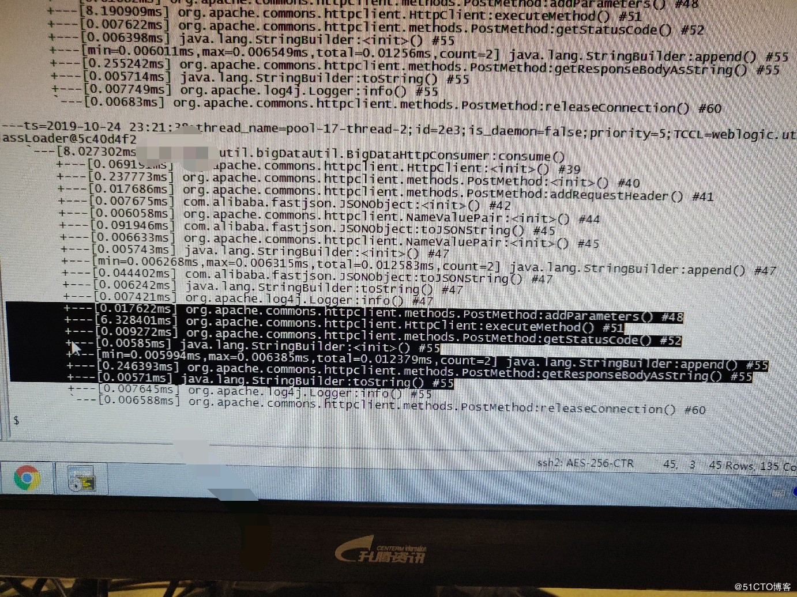

Arthas是一个类似于Btrace的JVM在线调试分析工具，具体可参考我之前写的一篇博客：利用JVM在线调试工具排查线上问题。本文分享笔者刚遇到的一个问题，虽然不复杂，但是很典型。
昨天上线遇到一个问题，交易后给大数据平台异步送数，但是他们说没收到数据，因为我们没有打日志，所以没有直接的证据证明是他们的问题而不是我们的问题。
送数的原理大致如下，就是交易主线程把数据放到队列里，然后异步线程从队列里把数据取出来，发送到后台。
队列：
BlockingQueue<Message> queue = new BlockingQueue();
同步线程：
void sendMsg(Message msg) {
queue.offer(msg);
}
异步线程：
void consume() {
Message msg = queue.take();
while(msg != null) {
HttpClient.post(msg);
msg = queue.take();
}
}具体送数的代码如下( 加了行数)：
38 public void consume(Map msg) {
39 HttpClient httpClient = new HttpClient(cm);
40 PostMethod method = new PostMethod(uri);
41 method.addRequestHeader("context-type", "application/x-www-form-urlencoded");
42 JSONObject json = new JSONObject(msg);
43 NameValuePair[] params = new NameValuePair[2];
44 params[0] = new NameValuePair("topic", topic);
45 params[1] = new NameValuePair("value", json.toJSONString());
46 //System.out.println(msg.toString());
47 logger.info("BigDataHttp Send Json:" + json.toJSONString());
48 method.addParameters(params);
49 try {
50
51 httpClient.executeMethod(method);
52 if(method.getStatusCode() == 200) {
53 logger.info("BigDataHttp response(Success):"+ method.getResponseBodyAsString());
54 } else {
55 logger.info("BigDataHttp Response(error):" + method.getResponseBodyAsString());
56 }
57 } catch(Exception e) {
58 logger.error(e.getMessage(), e);
59 } finally {
60 method.releaseConnection();
61 }
62 }在日志里没有发现try里的异常，而比较遗憾的是，我们的日志虽然开了info级别，但是因为日志量太大，所以只开了交易上送和下发报文的日志，其他的日志都关了。
现在日志级别没法调，有没有办法能确定，请求返回了200，还是其他值呢？
可以用在线调试工具Arthas，我们使用Arthas的trace功能，查看这个类执行的详细步骤。
首先连接上这个JVM进程，pid为进程号。
java -jar arthas-boot.jar pid 然后执行命令
trace xxx.util.bigDataUtil.BigDataHttpConsumer consume这条命令的左右就是，追踪xxx.util.bigDataUtil.BigDataHttpConsumer类里consume方法的执行过程。
执行的结果如下，每一行最后的是代码行数，我们可以看一下，跟上面代码是一一对应的。

从代码中可以看到，如果返回码是200，那么它会执行第52行，如果返回码不是200，会执行55行，因此，我们通过trace功能确定执行了哪条语句，就可以知道到底返回没返回200，从结果来看，确定返回的不是200。
这样我们就有了确定的证据证明发给后台时返回非200，后台同事检查了自己的配置发现配置有误，是他们自己的问题。